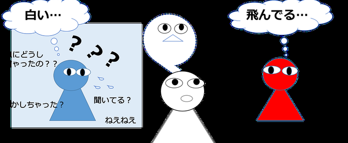
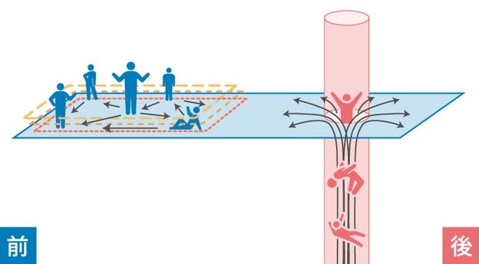

②意識のパターン

２つの仕組みの違い ②意識のあり方の違い
後者の特徴
後者は、社交場から退出する際に意識を引っ込める傾向を示します。このパターンを理解できる人は後者です。
後者の行動パターン（グループa）
- 時間が飛ぶ（外部が消える時間が当たり前にある）
- 考え事時に自分の世界に沈む／つまらないと「勝手に」意識が遠くなる
- 納得・検証に「お持ち帰りタイム」が必要
- 自分の世界での充電時間がないと支障が出る
- 自分の世界にいる時に声をかけられると驚く／起動が手間
- 近距離の呼びかけに応答がないことがある
前者の行動パターン（グループb）
- 上記が全く理解できない
- 相手が「いなくなる」現象が理解不能
- 誰かと話していても周りの状況情報は入ってくる
- 好き嫌いと実行が直結しない
- 声かけへの無反応は意図的無視と判断
２つの認識のあり方

前者の意識パターン
「寝るまでずっとON！」という特性を持ち、地上に意識がさらされ続けています。
- 時間も空間も途切れない連続性
- 世界は１つで、因果関係が延々とつながっている
- 自分の中に「マイホーム」がない
- 周囲の情報が勝手に入ってくる
後者の意識パターン
「ON」と「OFF」の繰り返し（呼吸のようなもの）が特徴です。
- 自分の中に「マイホーム」があり、ベースはこちら側
- 「自分の世界」と「みんなの世界」を行き来する二重生活が自然体
- 時間も空間も不連続で「時間が消える」
- 24時間が24時間ない
- マイホームに戻るのは睡眠や呼吸のようなもの
社会への影響
前者は「地上族」として常に社会平面に生きる一方、後者は「水中（地下）族」として「意識のホーム」から一時的に地上に出ています。
前者と後者の双方が相互理解を欠くことで、前者の尊敬と後者の感謝が不足しがちな社会構造が生まれています。